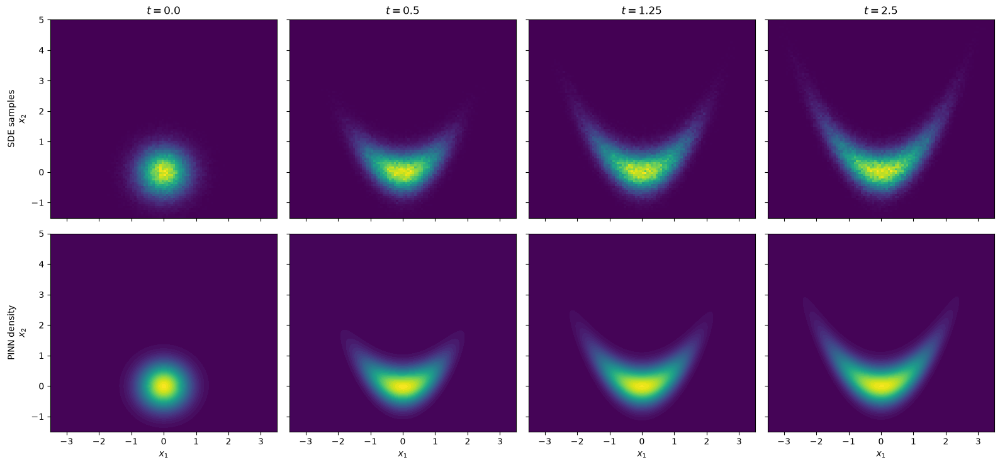

A physics-informed neural network for the Fokker-Planck equation
We solve the Fokker-Planck equation associated with the overdamped Langevin SDE
which governs the time-dependent probability density \(p(t, x)\) of \(X_t\):
As potential we take a banana in the first two coordinates and a harmonic well in the remaining ones,
so the stationary density \(\propto e^{-V/D}\) is the classic banana shape. Starting from a Gaussian \(p_0\) at the vertex, the mass spreads along both arms until the banana is filled.
The density is represented with a torchtt.nn.TTDensityLayer: a squared functional Tensor-Train over a Gaussian basis, composed with a nonlinear diffeomorphism (a rank-1 polynomial shear that can bend the density, followed by an affine map). A small network takes the time \(t\) and outputs the flat parameter vector of the layer — TT cores and transform parameters — so that
Two properties make this ansatz attractive for Fokker-Planck PINNs: \(p_\theta \geq 0\) and \(\int p_\theta(t, x)\,\mathrm{d}x = 1\) hold by construction for every :math:`t`, so no normalization penalty is needed — only the PDE residual and the initial condition enter the loss. The code is written for general dimension \(d\); here we fix \(d = 2\).
[1]:
%matplotlib inline
import torch
import matplotlib.pyplot as plt
import torchtt.functional
from torchtt.nn import TTDensityLayer, AffineTransform, Rank1Shear, ComposedTransform
torch.manual_seed(0)
/home/yonnss/repos/torchTT/torchtt/_dmrg.py:19: UserWarning:
C++ implementation not available. Using pure Python.
warnings.warn("\x1B[33m\nC++ implementation not available. Using pure Python.\n\033[0m")
/home/yonnss/repos/torchTT/torchtt/_amen.py:21: UserWarning:
C++ implementation not available. Using pure Python.
warnings.warn(
/home/yonnss/repos/torchTT/torchtt/solvers.py:21: UserWarning:
C++ implementation not available. Using pure Python.
warnings.warn(
/home/yonnss/repos/torchTT/torchtt/cpp.py:12: UserWarning:
C++ implementation not available. Using pure Python.
warnings.warn("\x1B[33m\nC++ implementation not available. Using pure Python.\n\033[0m")
/home/yonnss/repos/torchTT/torchtt/__init__.py:34: UserWarning:
C++ implementation not available. Using pure Python.
warnings.warn(
[1]:
<torch._C.Generator at 0x77e512cb11b0>
Problem setup
Dimension, potential parameters, diffusion coefficient, time horizon and the box on which collocation points will be placed. The initial condition is an isotropic Gaussian at the banana vertex,
and the drift is \(f = -\nabla V\), which for the banana potential reads
[2]:
d = 2 # spatial dimension (the script is generic in d)
sig1, sig2, bend = 1.0, 0.4, 0.5 # banana parameters
D = 1.0 # diffusion coefficient
T = 2.5 # time horizon
m0 = torch.zeros(d) # initial Gaussian at the banana vertex
s0 = 0.5
lo = torch.tensor([-3.5, -1.5] + [-3.0] * (d - 2)) # collocation box
hi = torch.tensor([3.5, 5.0] + [3.0] * (d - 2))
def drift(x):
"""f(x) = -grad V(x) for the banana potential, any d >= 2."""
w = (x[..., 1] - bend * x[..., 0] ** 2) / sig2 ** 2
f0 = -x[..., 0] / sig1 ** 2 + 2.0 * bend * x[..., 0] * w
f1 = -w
return torch.cat([torch.stack([f0, f1], dim=-1), -x[..., 2:]], dim=-1)
def pdf0(x):
"""Initial density: isotropic Gaussian N(m0, s0^2 I)."""
q = ((x - m0) ** 2).sum(-1) / (2 * s0 ** 2)
return torch.exp(-q) / (2 * torch.pi * s0 ** 2) ** (d / 2)
def sample_box(m):
return lo + (hi - lo) * torch.rand(m, d)
The model
The reference density lives on the unit cube: each dimension gets a Gaussian basis of \(N\) functions on \([0,1]\), and the TT cores use a bond rank of \(6\). On top of it sits a diffeomorphism \(T_t\), so the model density is the push-forward
where both the TT cores \(G(t)\) and the parameters of \(T_t\) are emitted by the network net as one flat vector, as a function of \(t\). The transform is a Rank1Shear of degree 2 — exactly the map that can unbend a parabola, \(z_2 = x_2 + \alpha_2 x_1^2\) — followed by an AffineTransform that carries the physical box onto the unit cube.
The last layer of net is initialized with tiny weights and a bias theta0 chosen so that at start the transform is the plain box-to-cube map — a sane density to begin training from.
[3]:
N = [12] * d # basis functions per dimension
R = [1] + [6] * (d - 1) + [1] # TT ranks
basis = [torchtt.functional.GaussianBasis(torch.linspace(0, 1, n), delta_overlap=1) for n in N]
transform = ComposedTransform([Rank1Shear(d, degree=2), AffineTransform(d)])
layer = TTDensityLayer(N, R, basis, transform=transform)
n_params = layer.input_requirement()
n_core = sum(n * r0 * r1 for n, r0, r1 in zip(N, R, R[1:]))
print(f"parameters per density: {n_params} (TT cores: {n_core}, transform: {n_params - n_core})")
# initial parameter vector: random cores, identity shear, box -> unit cube affine
shear0 = torch.zeros(2 * d + 1 + 2)
shear0[d] = 1.0 # u = e_2 (shear direction)
shear0[1] = 1.0 # v = e_1 (shear "driven by" x_1)
affine0 = torch.cat([torch.zeros(d * (d - 1) // 2), # no rotation
torch.log(1.0 / (hi - lo)), # scales
-lo / (hi - lo)]) # offsets
theta0 = torch.cat([torch.rand(n_core), shear0, affine0])
net = torch.nn.Sequential(
torch.nn.Linear(1, 64), torch.nn.Tanh(),
torch.nn.Linear(64, 64), torch.nn.Tanh(),
torch.nn.Linear(64, n_params),
)
with torch.no_grad():
net[-1].weight *= 0.01
net[-1].bias.copy_(theta0)
def pdf_model(t, x):
"""p(t, x) for a batch: t is (M, 1), x is (M, d)."""
return layer(net(t / T), x)
parameters per density: 156 (TT cores: 144, transform: 12)
The PDE residual
The Fokker-Planck equation in divergence form uses the probability flux \(J = f\,p - D \nabla p\), and the residual of the ansatz is
All derivatives come from automatic differentiation; the divergence costs one backward pass per dimension.
[4]:
def residual(t, x):
t = t.detach().requires_grad_(True)
x = x.detach().requires_grad_(True)
p = pdf_model(t, x)
p_t = torch.autograd.grad(p.sum(), t, create_graph=True)[0][:, 0]
p_x = torch.autograd.grad(p.sum(), x, create_graph=True)[0]
flux = drift(x) * p.unsqueeze(-1) - D * p_x
div = 0.0
for i in range(d):
div = div + torch.autograd.grad(flux[:, i].sum(), x, create_graph=True)[0][:, i]
return p_t + div
Training
Since normalization and positivity are built into the layer, the loss has only two terms — the PDE residual on uniformly drawn collocation points \((t, x)\) and the initial condition at \(t = 0\):
The IC points \(x'_m\) are drawn half from \(p_0\) itself and half uniformly from the box, so the density is also pushed to zero away from the initial blob. All points are redrawn every step.
[5]:
n_iters = 3000
M_pde, M_ic = 2048, 512
opt = torch.optim.Adam(net.parameters(), lr=1e-3)
for it in range(n_iters + 1):
t_c = T * torch.rand(M_pde, 1)
x_c = sample_box(M_pde)
loss_pde = residual(t_c, x_c).pow(2).mean()
x_ic = torch.cat([m0 + s0 * torch.randn(M_ic // 2, d), sample_box(M_ic // 2)])
p_ic = pdf_model(torch.zeros(M_ic, 1), x_ic)
loss_ic = (p_ic - pdf0(x_ic)).pow(2).mean()
loss = loss_pde + 100.0 * loss_ic
opt.zero_grad()
loss.backward()
opt.step()
if it % 500 == 0:
print(f"iter {it:5d} PDE loss {loss_pde.item():.3e} IC loss {loss_ic.item():.3e}")
iter 0 PDE loss 5.357e-01 IC loss 6.282e-02
iter 500 PDE loss 5.310e-03 IC loss 3.175e-06
iter 1000 PDE loss 1.958e-03 IC loss 1.072e-06
iter 1500 PDE loss 7.172e-04 IC loss 5.989e-06
iter 2000 PDE loss 5.551e-04 IC loss 1.174e-06
iter 2500 PDE loss 3.507e-04 IC loss 2.938e-06
iter 3000 PDE loss 3.877e-04 IC loss 4.858e-06
Reference solution by sampling
The same SDE is simulated for a large ensemble of particles with the Euler-Maruyama scheme
and the empirical histograms serve as ground truth. Snapshots are kept at four times.
[6]:
t_snap = [0.0, 0.5, 1.25, 2.5]
n_particles = 200_000
dt = 2e-3
x_p = m0 + s0 * torch.randn(n_particles, d)
snapshots, t_cur = [x_p.clone()], 0.0
with torch.no_grad():
for ts in t_snap[1:]:
while t_cur < ts - 1e-9:
x_p = x_p + drift(x_p) * dt + (2 * D * dt) ** 0.5 * torch.randn_like(x_p)
t_cur += dt
snapshots.append(x_p.clone())
Comparison
Top row: 2-D histograms of the particles. Bottom row: the learned \(p(t, x)\) on a grid (for \(d > 2\) one would plot a slice or marginal instead). The PINN starts as the round Gaussian and bends into the banana, matching the sampled evolution.
[7]:
ng = 150
gx = torch.linspace(lo[0], hi[0], ng)
gy = torch.linspace(lo[1], hi[1], ng)
Xg, Yg = torch.meshgrid(gx, gy, indexing="ij")
grid = torch.stack([Xg.flatten(), Yg.flatten()], dim=1)
if d > 2:
grid = torch.cat([grid, torch.zeros(grid.shape[0], d - 2)], dim=1) # slice at x_k = 0
fig, axes = plt.subplots(2, len(t_snap), figsize=(4 * len(t_snap), 7.5), sharex=True, sharey=True)
for j, (ts, xs) in enumerate(zip(t_snap, snapshots)):
axes[0, j].hist2d(xs[:, 0].numpy(), xs[:, 1].numpy(), bins=100,
range=[[lo[0], hi[0]], [lo[1], hi[1]]], density=True, cmap="viridis")
axes[0, j].set_title(f"$t = {ts}$")
with torch.no_grad():
p_grid = pdf_model(ts * torch.ones(grid.shape[0], 1), grid).reshape(ng, ng)
axes[1, j].contourf(Xg.numpy(), Yg.numpy(), p_grid.numpy(), levels=50, cmap="viridis")
axes[0, 0].set_ylabel("SDE samples\n$x_2$")
axes[1, 0].set_ylabel("PINN density\n$x_2$")
for ax in axes[1]:
ax.set_xlabel("$x_1$")
plt.tight_layout()
plt.show()

Moments and normalization
A quantitative check: the mean \(\int x\, p_\theta(t, x)\,\mathrm{d}x\) of the learned density (by quadrature on the grid) against the sample mean, plus the integral \(\int_\text{box} p_\theta(t, x)\,\mathrm{d}x\) — which should be \(\approx 1\) without ever having been enforced during training.
[8]:
cell = ((hi[0] - lo[0]) / ng * (hi[1] - lo[1]) / ng).item()
for ts, xs in zip(t_snap, snapshots):
with torch.no_grad():
p_grid = pdf_model(ts * torch.ones(grid.shape[0], 1), grid)
w = p_grid * cell
mean_pinn = (grid[:, :2] * w.unsqueeze(-1)).sum(0)
mean_mc = xs[:, :2].mean(0)
print(f"t = {ts:4.2f} integral {w.sum():.3f} "
f"mean PINN ({mean_pinn[0]:+.3f}, {mean_pinn[1]:+.3f}) "
f"mean MC ({mean_mc[0]:+.3f}, {mean_mc[1]:+.3f})")
t = 0.00 integral 0.986 mean PINN (+0.003, +0.000) mean MC (-0.002, -0.001)
t = 0.50 integral 0.986 mean PINN (+0.004, +0.217) mean MC (+0.004, +0.222)
t = 1.25 integral 0.986 mean PINN (-0.001, +0.305) mean MC (+0.002, +0.345)
t = 2.50 integral 0.986 mean PINN (+0.015, +0.389) mean MC (+0.004, +0.427)